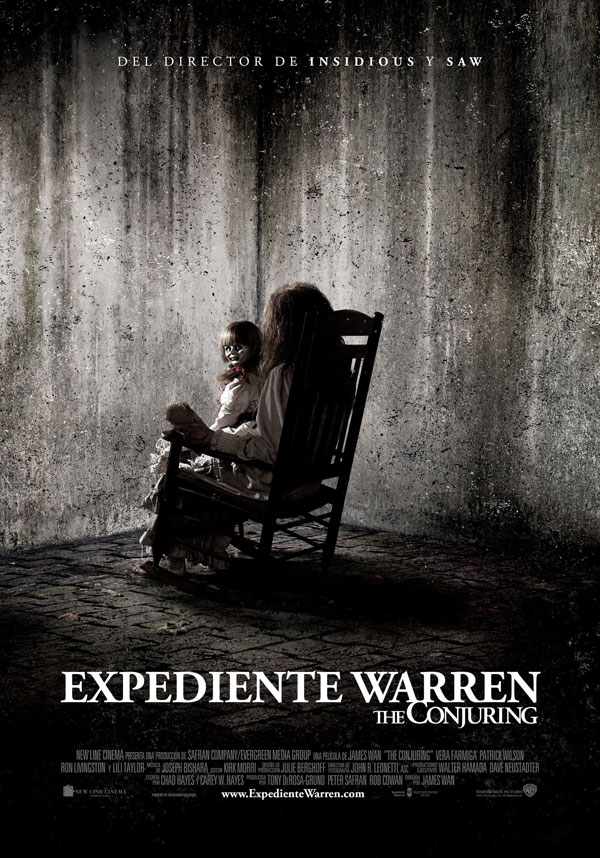

Joker "Guason" (2019)
Duracion:
122 Minutos
Estreno:
4 de octubre de 2019 en Mexico
Genero:
Drama,
suspenso,
crimen
Donde se filmo:
Estados unidos de america
Producida por:
Todd Phillips,
Bradley Cooper,
Emma Tillinger Koskoff
Dirigida por:
Todd Phillips
Elenco:
Joaquin Phoenix como Arthur Fleck/Joker,
Robert De Niro como Murray Franklin,
Zazie Beetz como Sophie Dumond,
Frances Conroy como Penny Fleck,
Brett Cullen como Thomas Wayne,
Shea Whigham como Detective Burke,
Bill Camp como Detective Garrity,
Douglas Hodge como Alfred Pennyworth.
Sinopsis:
Arthur Fleck adora hacer reír a la gente, pero su carrera como comediante es un fracaso.
El repudio social, la marginación y una serie de trágicos acontecimientos lo conducen por el sendero de la locura y, finalmente, cae en el mundo del crimen.
El hombre invisible
Duracion:
124 Minutos
Estreno:
28 de febrero de 2020
Donde se filmo:
Estados unids de america
Genero:
Suspenso, drama
Producida por:
Jason Blum,
Leigh Whannell
Dirigida por:
Leigh Whannell
Elenco:
Elisabeth Moss como Cecilia Kass,
Oliver Jackson-Cohen como Adrian Griffin,
Aldis Hodge como James Lanier,
Storm Reid como Sydney Lanier,
Harriet Dyer como Emily Kass,
Michael Dorman como Tom Griffin,
Benedict Hardie como Marc,
Amali Golden como Annie,
Sam Smith como el detective Reckley.
Sinopsis:
Un científico loco finge su suicidio y luego utiliza su invisibilidad para aterrorizar a su expareja, quien decide enfrentar al hombre invisible ella misma luego de que la policía no creyera su historia.
Annabelle 3 viene a casa
Duracion:
106 Minutos
Donde se filmo:
Estados unidos de america
Genero:
Terror sobrenatural, drama, misterio y terror
Producida por:
James Wan,
Peter Safran
Estreno:
26 de junio de 2019
Dirigida por:
Gary Dauberman
Elenco:
Mckenna Grace como Judy Warren,
Madison Iseman como Mary Ellen,
Katie Sarife como Daniela Ríos,
Vera Farmiga como Lorraine Warren,
Patrick Wilson como Ed Warren,
Michael Cimino como Bob Palmeri,
Samara Lee como Annabelle “Bee” Mullins,
Stephen Blackehart como Thomas,
Steve Coulter como el padre Gordon,
Paul Dean como el Sr. Palmeri,
Luca Luhan como Anthony Ríos,
Rickie Gonzalez como Tyler Bruce.
Sinopsis:
Ed y Lorraine Warren tratan de encerrar bajo llave a Annabelle, una muñeca poseída.
Como demonólogos la colocaran en una vitrina bendecida como medida de seguridad, sin embargo, una noche terrorífica Annabelle despertará a otros espíritus malignos que se encuentran en la habitación y que tendrán una nueva fijación: la hija pequeña del matrimonio y sus amigos.

Expediente Warren: The Conjuring
Duracion:
112 Minutos
Genero :
Terror y cine de suspenso
Estreno:
19 de julio de 2013
Donde se filmo:
Estados unidos de america
Producida por:
Tony DeRosa-Grund,
Peter Safran,
Rob Cowan
Dirigida por:
James Wan
Elenco:
Patrick Wilson como Ed Warren,
Vera Farmiga como Lorraine Warren,
Ron Livingston como Roger Perron,
Lili Taylor como Carolyn Perron,
Joey King como Christine Perron,
Shanley Caswell como Andrea Perron,
Hayley McFarland como Nancy Perron,
Mackenzie Foy como Cindy Perron,
Kyla Deaver como April Perron,
Shannon Kook como Drew Thomas,
John Brotherton como Brad Hamilton,
Sterling Jerins como Judy Warren,
Marion Guyot como Georgiana Moran,
Steve Coulter como Padre Gordon,
Joseph Bishara como Bathsheba Sherman,
Morganna Bridgers como Debbie "Enfermera",
Amy Tipton como Camilla,
Christof Veillon como Maurice.
Sinopsis:
A principios de los años 70, Ed y Lorrain Warren, reputados investigadores de fenómenos paranormales, se enfrentan a una entidad demoníaca al intentar ayudar a una familia que está siendo aterrorizada por una presencia oscura en su aislada granja.
Holocausto caníbal
Duracion:
95 Minutos
Estreno:
1980
Donde se filmo:
Italia
Genero:
Terror, gore, metraje encontrado
Producida por:
Franco Di Nunzio,
Franco Palaggi
Dirigida por:
Ruggero Deodato
Elenco:
Robert Kerman, como Profesor Harold Monroe,
Francesca Ciardi, como Faye Daniels,
Perry Pirkanen, como Jack Anders,
Luca Barbareschi, como Mark Tomaso,
Salvatore Basile, como Chaco Losojos,
Ricardo Fuentes, como Felipe Ocaña,
Carl Gabriel Yorke, como Alan Yates,
Paolo Paoloni, como Jefe Ejecutivo de Nueva York,
Lionello Pio Di Savoia, como Ejecutivo,
Luigina Rocchi,
Lucía Costantini, como Indígena Yacumo lapidada.
Sinopsis:
Cuatro jóvenes documentalistas se adentran en la selva amazónica, en pleno corazón de América del Sur, para realizar un reportaje sobre las tribus que habitan en esa región, de las que se dice que todavía practican el canibalismo.
Debido a la desaparición de los reporteros, dos meses después un grupo de rescate es enviado para averiguar qué ha sido de ellos, lo único que encuentran es el material filmado sobre su terrible fin.